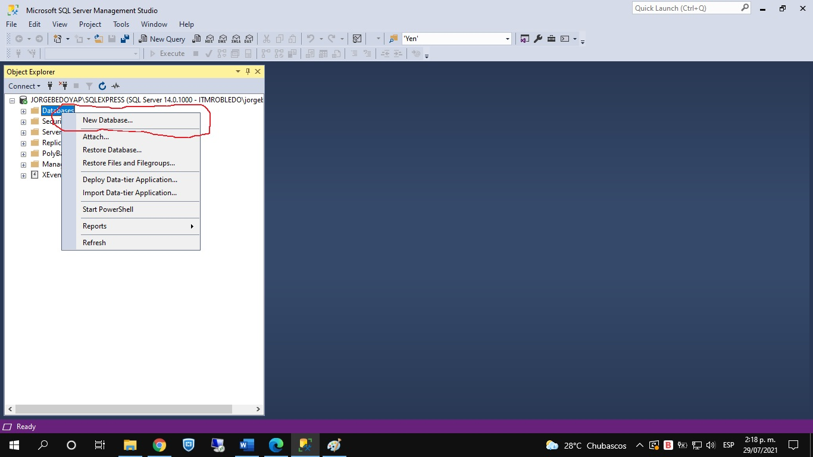
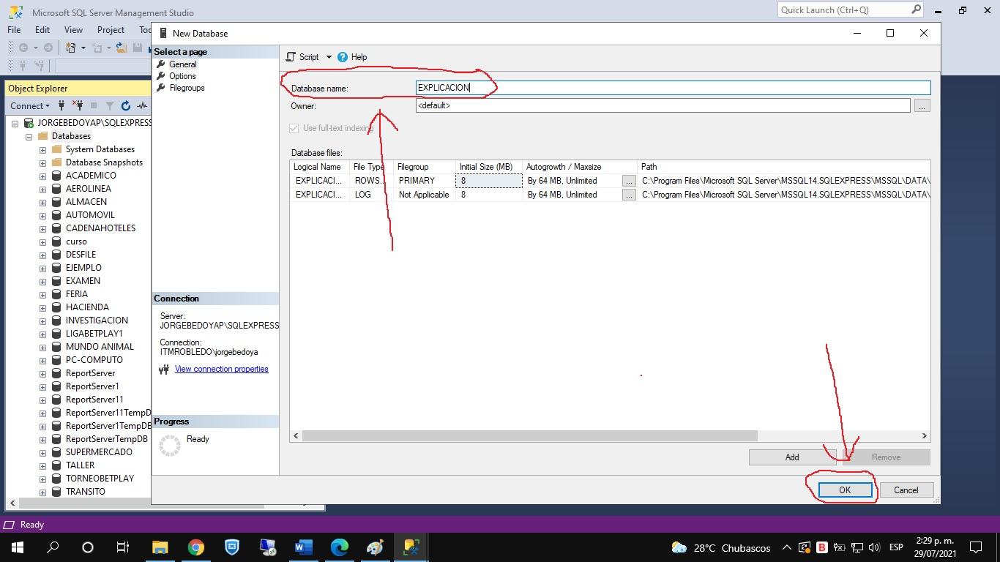
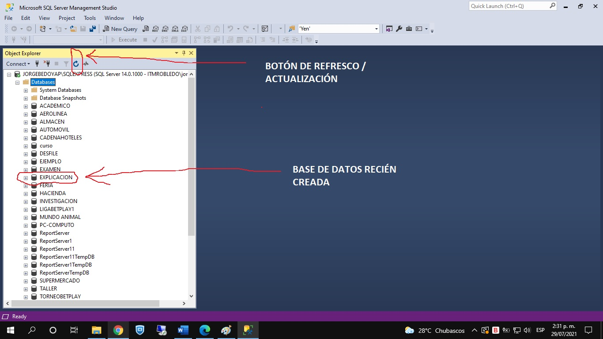
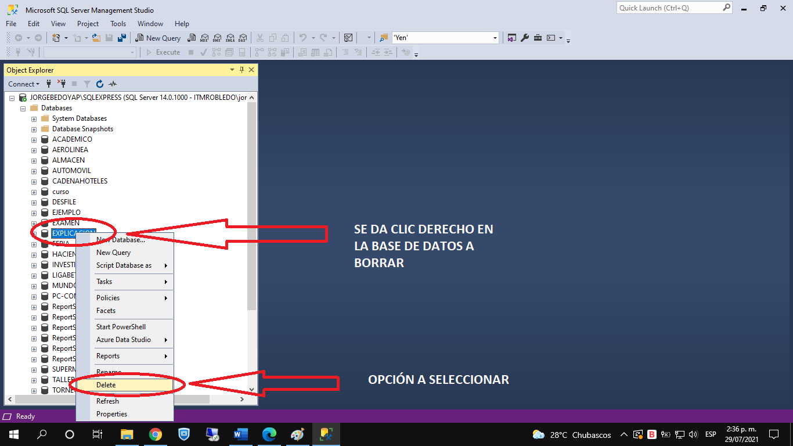
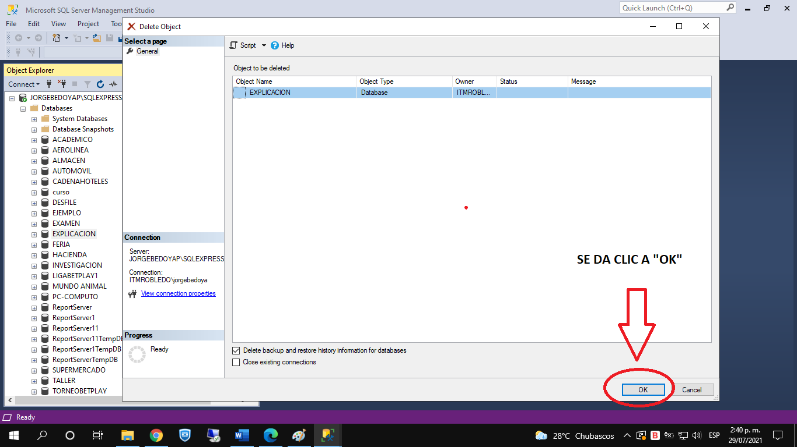
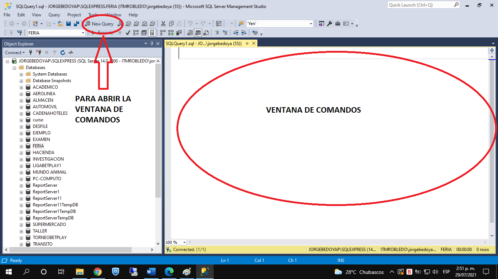
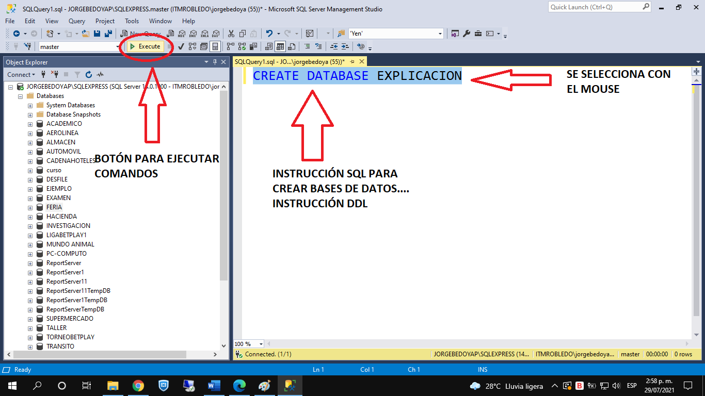
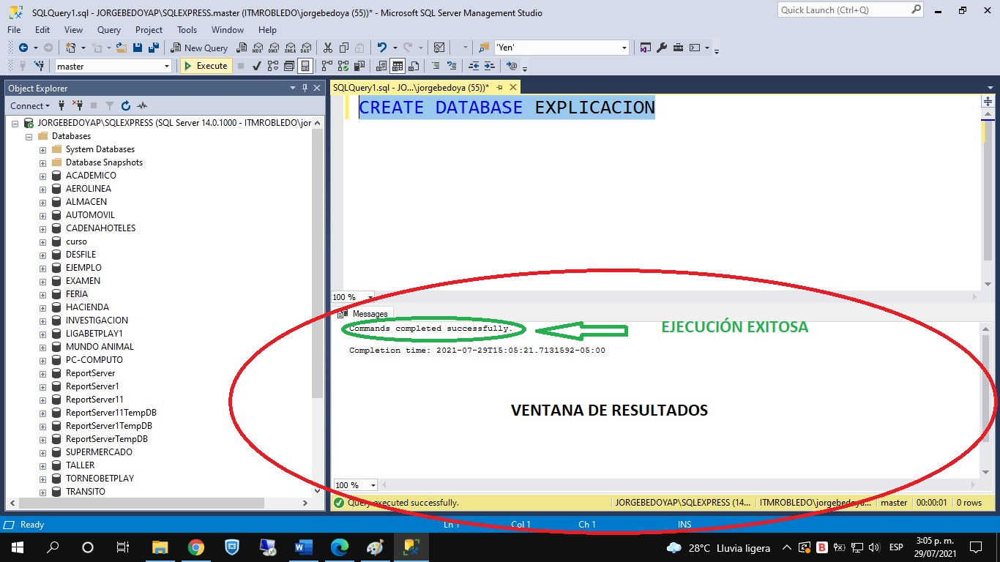
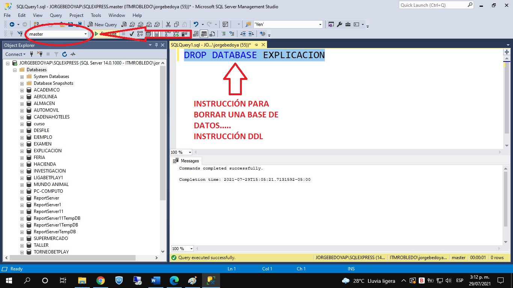

Para trabajar en SQL Server (y, en general, en cualquier DBMS), existen dos maneras de hacerlo:
- Por modo gráfico: Donde se utilizan las opciones del DBMS a través del mouse.
- Por modo comando: Donde se deben digitar y ejecutar los comandos necesarios.
Vamos a mostrar, a continuación, la creación y el borrado de bases de datos realizada por medio de ambos ambientes.
| Para crear una base de datos, por modo gráfico, le damos clic derecho a "Databases", y en el menú emergente que aparece escogemos la opción "New Database". |  |
| En la ventana que aparece, digitamos el nombre de la base de datos que vamos a crear, y presionamos en botón OK. |  |
| Luego de esto, debemos refrescar la página de SQL Server para que en la lista de bases de datos, aparezca la nueva base de datos. |  |
Ahora, vamos a explicar el borrado de bases de datos por modo gráfico. Vamos a borrar la base de datos recién creada.
| Se le da clic derecho a la base de datos que se va a borrar. En el menú emergente, se selecciona la opción "Delete". |  |
|
Aparece una ventana, donde se debe confirmar si se va a borrar la base de datos. Esto se hace dándole clic al botón "OK". Luego, damos clic al botón de refrescar y ya no debe aparecer la base de datos borrada en la lista de bases de datos existentes. |
 |
Cabe señalar dos cosas:
- Cuando se borra una base de datos, también se borra todo su contenido (tablas, datos, índices, vistas, etc.).
- Luego de borrar una base de datos, la única manera de recuperarla es a través de un backup.
Ahora, procedamos a explicar cómo se crea una base de datos por modo comando.
| Para abrir la ventana de comandos, se da clic en el botón "New Query", que está en la parte superior central de la pantalla. |  |
|
En la ventana de comandos, se digita la siguiente instrucción: CREATE DATABASE <nombre BD a crear> Esta instrucción es DDL, es decir, Data Definition Language, lo cual quiere decir que con dicha instrucción se está afectando una estructura de datos. Para ejecutar algún comando que está en la ventana de comandos, se selecciona con el mouse y se le da clic al botón "Execute". |
 |
|
Al ejecutar el comando, se activa la ventana de resultados, donde el motor especifica si la ejecución fue exitosa o si, por el contrario, hubo un error. Si hay un error, el mensaje de error aparecerá en dicha ventana, resaltado en rojo. Para nuestro caso, el mensaje que aparece es "Commands completed successfully", lo cual quiere decir que el comando se ejecutó exitosamente, la base de datos fue creada. Para que la base de datos creada aparezca en la lista de bases de datos, se debe darle clic al botón de refrescar. |
 |
Para borrar una base de datos por modo comando, procedemos de la siguiente manera.
|
En la ventana de comandos, se digita la siguiente instrucción: DROP DATABASE <nombre BD a borrar> Este comando es de tipo DDL, porque se está borrando una estructura de datos. Se selecciona el comando con el mouse y se le da clic al botón "Execute". Es importante que cuando se vaya a borrar una base de datos, no estar ubicado en ella. Para saber en qué base de datos se encuentra uno parado, existe la caja de texto indicada en la imagen, que dice en cuál base de datos nos encontramos. Para ver que la base de datos ya no está creada en la lista de bases de datos, se debe dar clic al botón de refrescar. |
 |
| Crear Bases de Datos | Borrar Bases de Datos |